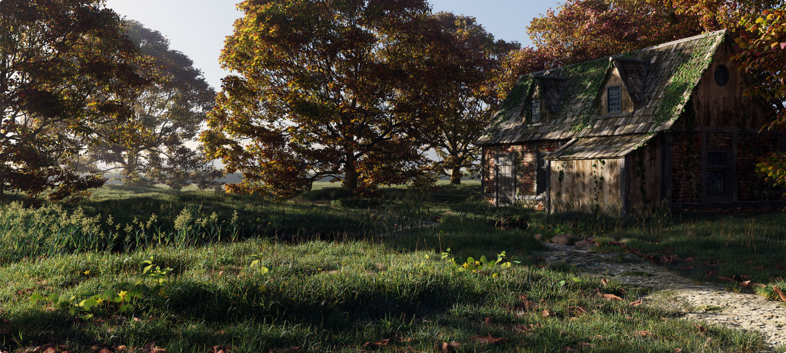
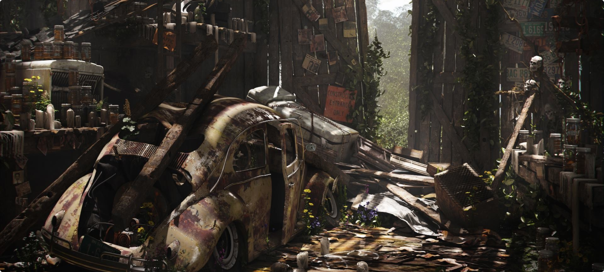
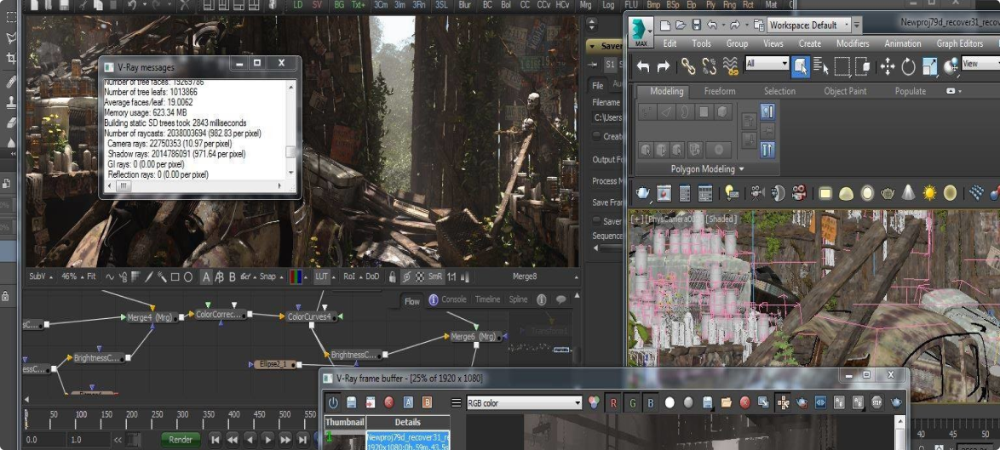
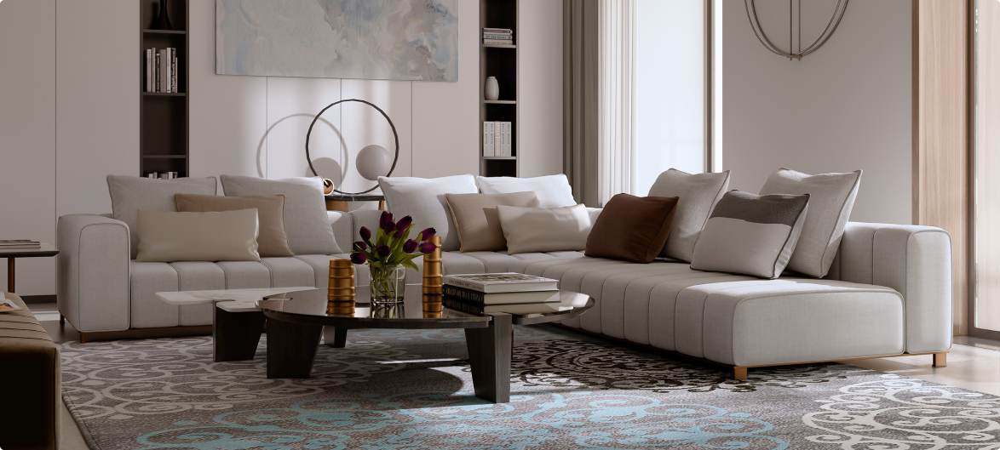
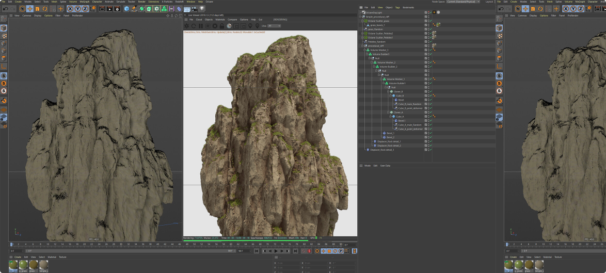
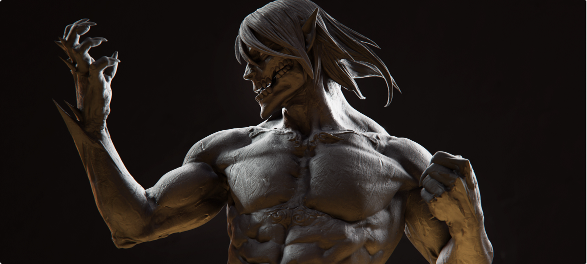

Программы для моделирования
Для того чтобы создать 3D-объект , необходимо воспользоваться компьютерной программой, которая предоставит необходимый инструментарий и шаблоны для проектировщика. Рассмотрим самые популярные программы, которые позволяют осуществить компьютерное моделирование.
Blender. Бесплатный 3D-редактор, вклад в совершенствование которого может сделать любой разбирающийся программист. Пример окружения, созданного в Blender:
К преимуществам данного программного продукта можно отнести кроссплатформенность и низкие требования к аппаратному обеспечению. Обладает достаточно широкими (для бесплатного редактора) возможностями.
3ds Max. Данный редактор имеет обширный функционал, ориентированный, прежде всего, на проектирование архитектурных сооружений и интерьеров помещений:
  Редактор имеет внушительное количество различных дополнений (в том числе и для визуализации природных катаклизмов). Для новичка, к сожалению, редактор достаточно сложен в освоении.
Cinema 4D – универсальная программа для 3D моделирования, редактирования объектов и создания эффектов. Эту программу обожают использовать студенты, так как не потребуется много времени и усилий на изучение принципов работы.
Из плюсов - программа поддерживает русский язык, и это не “фанатский перевод”, а профессиональный и официальный. Есть учебники и мануалы на русском языке, чтобы русскоговорящие пользователи быстрее освоили базовые навыки работы в программе.
Программа ZBrush от компании Pixologic – это мощный профессиональный инструмент для создания и редактирования трехмерной графики. Для того, чтобы лучше подготовить новичков к работе в приложении, мы подготовили обзор программы ZBrush. В первую очередь программа направлена на работу с так называемой «цифровой глиной», из которой можно буквально вылепливать объекты при помощи разнообразных инструментов.
Такая цифровая лепка идеальна для создания людей, животных, и вообще всего органического. Тем не менее, ZBrush может использоваться для твердотельного 3D моделирования и оснащен для этого специальными инструментами. Огромный набор специальных кистей направлен на достижение максимальной реалистичности при создании 3D моделей, а инструменты наложения текстур и визуализации дополняют функционал программы.